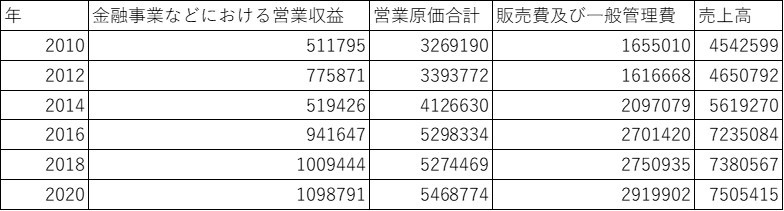
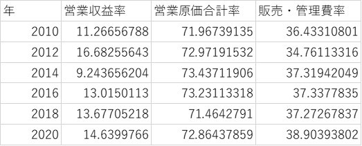
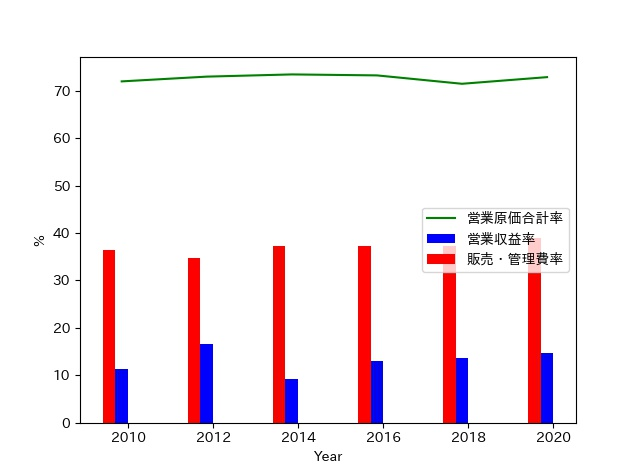

イオン企業分析 其の2
2020/5/15
イオンの企業分析を行っていきます。（2ページ目）
目次
- 1 取引収益性分析とは
- 2 売上高総利益率
- 3 売上高営業利益率
- 4 売上高経常利益率
取引収益性分析
この分析手法は、売上高と利益とを比較するものだが、簡単に言えば、売り上げに対する利益の割合を求めるものだが、利益の見方によって 分かることも違うため、様々な比較が可能といえます。
今回の比較対象は3つで、それぞれ売上高総利益率、売上高営業利益率、売上高経常利益率を分析していきます。
使用するデータの関係性は、下記に示す通り。
- 総利益＝売上高から売上原価を差し引いたもの
- 営業利益＝営業収益合計(売上高＋金融事業などにおける営業収益)から営業原価合計(売上原価+α)と販売費及び一般管理費を差し引いたもの
- 経常利益＝営業利益に営業外収益と営業外費用を含めたもの
| 年 | 売上高総利益率 | 売上高営業利益率 | 売上高経常利益率 |
| 2010 | 28.03258663 | 2.866046508 | 2.866156577 |
| 2012 | 27.02808468 | 4.207670435 | 4.563953838 |
| 2014 | 27.00534055 | 3.050787736 | 3.147277137 |
| 2016 | 27.18673342 | 2.446094613 | 2.483371306 |
| 2018 | 27.84534034 | 2.849008755 | 2.896417037 |
| 2020 | 27.62749295 | 2.871659995 | 2.742393325 |
売上高総利益率
分析結果を見てみると、10年間はあまり変動していないことがよくわかるかと。（＊単位に注意） 売上高と総利益率は年々上昇しているため、売上高が上がればそれに比例するように総利益も上がっていることがわかります。
しかし、売上高と総利益のデータを見てみると、近年では、5－10年前と比較すると伸び悩んでいるのでは？
売上高営業利益率
こちらは売上高総利益率とは違って、売上と比例的な関係になっていないことがわかります。 数値が高いほど営業活動の効率が良いとされているデータですが、
既に、売上原価にその原因はないということが分かっているため、営業収益、営業原価合計、販売費及び一般管理費に 売上と比例関係にならない原因があるのではないか？と考えられるため、それらのデータも分析していきます。
上記のように、営業利益の内訳である営業収益合計、営業原価合計、販売費及び一般管理費 と売上高とを比較していく。その結果は下図へ
グラフで表すと、下図のようになる。
この結果から、売上原価合計(緑線)については、売上高と比例しており 営業利益と売上高が比例関係にないことの原因とはならないことがわかります。
営業収益合計は、総合金融事業における営業収益とその他の営業収益の合計値だが、 営業収益と売上高の比率(以降、売上高営業収益率)は、高いほど営業利益も上昇する。
よって、2012年においては、売上高営業収益率が明らかに高いため、売上高営業利益率も 他と比べても大きく上昇している。つまり、営業収益合計において、何らかの違いがあったと とらえられるのでは？
また、販売費及び一般管理費においては、費用のため少なければ少ないほど良いが、近年は増加傾向にあり (筆者は最低賃金の増加が原因だと考える)、営業利益に打撃を与えている。 この点においても、2012年は他と比べても明らかに少ないことがわかりますね。
よって、各年の営業収益合計と販売費及び一般管理費が営業利益に 影響を与えるほど、各年でばらつきがあることがわかったかと。 つまり、イオンはいかに販売費及び一般管理費を減らしつつ営業収益合計を 上昇させるかを考えなければならないとわかりました。
売上高経常利益率
この指標は、売上高営業利益率と違って、営業外収益が関わってくるが、 営業利益と経常利益を比べてみても大差はないため、イオンの経営において、 営業外収益は、利益に大きな影響を与えるものではないと判断し、割愛する。
以上が今回行った取引収益性の分析結果だが、2012年が他と比べても非常に 効率的な経営活動を行っていたことがわかった。
じゃあ、イオンって2012年に何があったのだろうか？ 疑問に思うだろうが、また、別の機会に紹介していく
次ページにて、資本収益性の分析を行っていく。